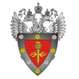

Схема сетевого взаимодействия
с использованием «Рубикон»
Функции системы обнаружения
вторжений (СОВ)
Система обнаружения вторжений (СОВ) может функционировать в двух режимах:
в режиме обнаружения атак (IDS);
в режиме предотвращения атак (IPS).
СОВ содержит два механизма выявления потенциально опасного трафика,
с
использованием сигнатурного и эвристического метода.
По умолчанию, при срабатывании решающих правил СОВ, происходит
фиксация
информации в локальном журнале «Рубикон», также есть
возможность дополнительно
настроить отображение уведомлений в
веб-интерфейсе, отправку информации на
электронную почту и
отправку событий на внешний сервер по протоколу syslog.
Прочие возможности ПАК «Рубикон»
Поддержка технологии VPN:
IPSec
OpenVPN
GRE
Поддержка HTTP- и FTP-прокси
Наличие механизма для автоматического контроля целостности системы
Возможность фильтрации и сортировки при работе с локальным журналом
Возможность экспорта локальных журналов из системы
Может выступать в качестве DHCP-сервера
Может выступать в качестве DNS-сервера
Может выступать в качестве NTP-сервера
Резервирование двух аппаратных платформ согласно протоколу CARP
Возможность создания множества резервных копий конфигурации системы

сертифицирован в системах сертификации средств
защиты информации
по требованиям безопасности
информации
ФСТЭК России
и
Министерства обороны Российской Федерации
ФСТЭК
(России) – Федеральная служба по техническому и
экспортному
контролю
МО РФ – Министерство обороны Российской Федерации
Основные технические характеристики